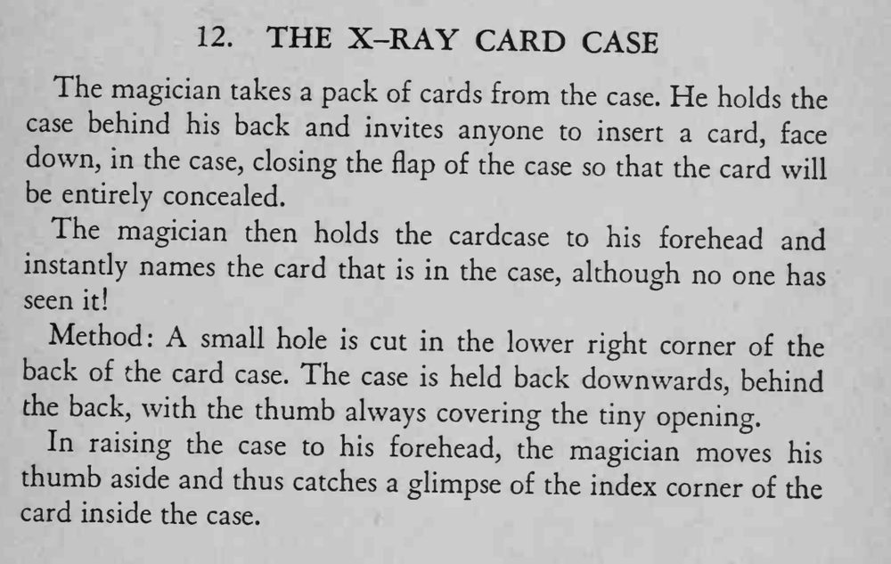

观众把一张牌牌面朝下塞进牌盒、盖好盒盖，魔术师把牌盒贴在额头上，就能说出里面是哪张牌。
举盒、贴额头的动作要慢而自然，拇指挡孔时别让观众注意到盒子有洞。

The magician takes a pack of cards from the case. He holds the case behind his back and invites anyone to insert a card, face down, in the case, closing the flap of the case so that the card will be entirely concealed. The magician then holds the cardcase to his forehead and instantly names the card that is in the case, although no one has seen it! Method: A small hole is cut in the lower right corner of the back of the card case. The case is held back downwards, behind the back, with the thumb always covering the tiny opening. In raising the case to his forehead, the magician moves his thumb aside and thus catches a glimpse of the index corner of the card inside the case.